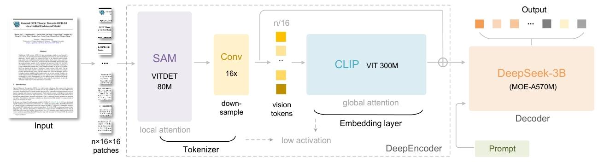

非文本的模态对齐¶
https://github.com/guyyariv/AudioToken?tab=readme-ov-file
出发点/痛点：文本是高度压缩、离散且有损的符号系统，类似于 qwen3 omni 或者 gemini 现在的这些的所谓全模态的模型架构都是把其他模态单独编码成 language 模态，但是损失了很多信息。
例如：
- 我看见鸟 1 和鸟 2，我能想象出他们的叫声，但是我并不知道对应的学名，也没有语义的概念。
-
人看到海，能想起海浪的声音，但没法文字解释“海浪的声音是什么样” 图片、文本、音频三种模态对齐，最后能实现的应用场景如：
-
文本转图像，输入一段音频，生成图像，如嘈杂的吆喝，可能是一个夜市场景图片（受益于对齐）
- 图片，点击其中某个 patch，能输出对应的块的听起来应该是什么样的。例如一幅图片（海边 + 烧烤 + 小孩嬉戏 + 椰子树），会有对应的声音/环境音，甚至是融合的 更远的愿景：这就是二维的世界模型，升维到空间，就是声音的传播，人走到不同的位置，听见的声音是不一样的
AI 脑暴¶
- 我在思考一个关于全模态的科研的 idea，类似于 qwen3 omni 或者 gemini 现在的这些的所谓全模态的模型架构，但有几个零碎的点子：1、语音模态和视觉模态不应该强行往语言模态上靠，而是彼此之间也应该有关联，比如从仿生的角度看到海，能想起大海的声音，这并非一定有语义的这一层，或者看到鸟 1 和鸟 2 能想到不同的叫声，但可能我并不知道这些鸟的学名，这才是符合认知的，因此应该存在语音与图片之间的关联。2、没太想好怎么训练，以及最后的应用场景，目前只想到比如对于图片的每一个 patch 都可以有对应的音频、和文本描述都相互映射，我也许可以构造这样的数据集，但最后架构什么样呢，需要你给出建议？最后的应用场景是什么呢，以及模型的输出是什么呢？3、这说起来可能类似于世界模型的一个探索，这好比在空间中，不同的位置存在不同的声音，不一样的文字描述，有了位置的概念，这块你是怎么想的？4、最后对于这样一个 idea，如何低成本验证一下科研的想法？用什么基座？什么样的数据？什么测试标准？ 这是一个非常具有深度且符合当前多模态前沿发展趋势（Native Multimodal）的思考。你对于“摆脱语言中介（De-text-centric）”和“感官直接互联”的直觉非常敏锐，这正是下一代“原生多模态”模型试图解决的核心问题。
目前的 GPT-4o 或 Gemini 1.5 虽然也是 Omnimodal，但很大程度上仍然 heavily rely on text alignment 或者 semantic instruction。你的 idea 更接近于具身智能（Embodied AI）和物理世界模拟器的本质。
以下我针对你的四个点子，进行拆解和重构，提供从架构到落地的建议：
1. 核心理念重构：感官共感觉（Synesthesia）而非语义翻译¶
你的观点：鸟 1 和鸟 2 的叫声不同，不需要知道学名（语义），而是视觉特征直接映射音频特征。
科研定位：
这在学术界被称为 Cross-modal Alignment without Semantic Supervision (非语义监督的跨模态对齐) 或者 Direct Sensory Mapping。
目前的模型大多是 \(Image \rightarrow Text \rightarrow Audio\)。而你想要的是 \(Image \leftrightarrow Audio\)（互为表征）。
价值所在：
文本是高度压缩、离散且有损的符号系统。许多物理属性（如风吹过不同材质树叶的声音细微差别、金属敲击的音色）在转化为文字时丢失了。你的模型旨在保留这些连续的物理特征。
2. 架构与训练：如何实现 Patch 级别的音视映射？¶
你提到的“Patch 对应音频”是一个非常好的切入点，这实际上是在做 Dense Audio-Visual Grounding（密集音视定位）。
建议架构：Unified Tokenizer Transformer (统一词表架构)¶
不要用传统的“编码器-解码器”强行拼接。要实现真正的互通，你需要将不同模态都“Token 化”到同一个序列中。
- 视觉端：使用 VQ-VAE 或 VQ-GAN 将图片 Patch 离散化为 Visual Tokens。
- 音频端：使用 Audio VQ-VAE (如 EnCodec 或 SoundStream) 将音频片段离散化为 Audio Tokens。
-
核心骨干：一个 Decoder-only 的 Transformer（类似 GPT）。 训练策略（关键创新点）：
-
Masked Modeling (掩码建模)：
- 输入一张图的 Tokens 和对应的环境音 Tokens。
- 随机 Mask 掉图片的一部分，让模型根据声音补全图片。
- 随机 Mask 掉声音，让模型根据图片补全声音。
- 重点：不输入任何 Text。强迫模型学习 的直接概率分布。
- Patch-level Local Alignment (局部对齐)：
- 这需要特殊的数据。通常视频数据（Video）包含了空间信息。
- Attention Map Loss：在训练 Transformer 时，强迫 Audio Token 的注意力权重（Attention Weights）聚焦在图片中发出声音的那个 Patch 上（例如：听到鸟叫，Attention 必须高亮鸟的位置，而不是背景的天空）。
模型的输出是什么？¶
- 输入：可以是图片，可以是声音，也可以是图片+位置坐标（Box/Mask）。
- 输出：
- 输入图片 输出对应的环境音效（Audio Waveform）。
- 输入声音 输出对视觉场景的想象（Image Generation）。
- 输入图片 + 鼠标点击某个物体（Patch） 输出该物体被敲击或发声的音效（这是最酷的交互）。
应用场景¶
- 沉浸式游戏/元宇宙开发：设计师画出一片森林，模型自动根据树木种类、密度生成对应的空间音效，无需人工配音。
- 盲人辅助眼镜：摄像头看到前方有辆车，直接转化模拟出车的声音方位和距离感（利用双耳效应），比告诉他“前面有车”反应更快。
- 视频音效自动配乐 (Foley Generation)：给一段无声视频，自动对齐口型、脚步声和环境音。
3. 升维思考：世界模型与空间位置 (Spatial Audio-Visual)¶
你的观点：空间中不同位置有不同声音，引入位置概念。
这确实是世界模型（World Model）的一个子集。世界模型的核心是对物理规律的预测。
你的模型需要引入 3D 空间参数 (x, y, z, t)。
这不仅仅是 Image-to-Audio，而是 3D Scene-to-Binaural Audio (3D场景到双耳音频)。
- 怎么想：声音是具有方向性和距离衰减的。
- 实现思路：在 Embedding 中加入 Spatial Positional Encoding（空间位置编码）。
- 如果声源（鸟）在图片的左上角，生成的 Audio Token 应该包含“左声道大、右声道小”以及“混响程度（距离感）”的信息。
- Google 的 Immersive Audio 类似这个方向，但你可以做成生成式的。
4. 低成本验证方案 (MVP - Minimum Viable Product)¶
从头训练一个 Omnimodal 模型成本极高，验证 idea 需要“巧劲”。
验证目标¶
验证“视觉特征可以直接映射音频特征，且包含比文本更丰富的细节”。
基座选择 (Standing on the shoulders of giants)¶
不要自己训练大模型，利用现有的强力 Encoder。
- 视觉编码器：CLIP (ViT-L/14) 或 DINOv2 (DINOv2 对物体几何特征理解更好，不依赖文本，强烈推荐用于你的 idea)。
- 音频编码器/解码器：AudioLDM (Latent Diffusion for Audio) 的 VAE 部分，或者 ImageBind (Meta 开源的，已经对齐了六种模态)。
低成本实验架构设计¶
构建一个简单的 Mapper Network (映射网络)：
- 冻结 DINOv2 (Vision Encoder)。
- 冻结 AudioLDM 的 VAE Decoder。
- 训练 一个轻量级的 MLP 或简单的 Transformer Mapper。
- 输入：图片 Patch 的 Feature。
- 输出：Audio VAE 的 Latent Code。
- Loss：生成的 Latent Code 与真实音频的 Latent Code 之间的距离。
数据来源 (The Fuel)¶
你需要大量的 (Image/Video frame, Audio) 对，且最好有空间信息。
- VGGSound：大规模视频数据集，包含视觉和对应的声音，非常适合做这件事。
- AudioSet：经典的音频数据集，部分有视频链接。
- FairPlay 或 MUSIC dataset：包含乐器演奏，视觉上很明显的动作（拉小提琴）对应特定的声音。
测试标准 (Evaluation)¶
不要用 Text-to-Audio 的指标。你需要证明你的模型比 "Image -> Text -> Audio" 更好。
- FAD (Fréchet Audio Distance)：衡量生成音频的质量。
- CLAP Score：计算生成的音频和输入图片的对齐程度。
- Case Study (定性分析)：找一个生僻的物体（大模型叫不出名字，但外观有材质特征），看你的模型能否根据材质（如金属、木头）生成正确的声音，而基于文本的模型可能会失败，因为它叫不出名字。
总结你的科研 Roadmap¶
- Title Idea: "Direct Sensory Mapping: Bridging Visual Patches and Acoustic Latents without Linguistic Bottlenecks"
- Step 1: 下载 VGGSound 数据集。
- Step 2: 提取视频帧的 DINOv2 特征（因为它关注视觉结构而非语义）。提取音频的 Mel-spectrogram 或 AudioLDM Latent。
- Step 3: 训练一个简单的 Mapper，让视觉特征预测音频特征。
- Step 4: 加入 Spatial Attention，让模型学会看图中的“发声物体”（比如高亮弹吉他的手）。
- Result: 展示你的模型看一张未见过的“奇异乐器”图片，能合成出合理的敲击声，证明这是一条通往通用物理世界模拟的可行路径。
- 我觉得忽略了非常重要的 LLM 基座，比如 qwen-vl 这种基座，其实里面已经包含了相当多的信息，是不是除了你说的 clip这些传统cv领域和音频领域的各种编码器以外，还是要参考这些含有基座模型的架构呢？给出你的设计思路 

你说得非常对。我之前的回答确实更多侧重于“信号层面的直接映射（Signal-to-Signal）”，忽略了 LLM（大语言模型）作为“大脑”在世界模型构建中的核心作用。
既然你提到了 Qwen-Omni 和 Janus (DeepSeek-VL-2) 这种架构，这说明你不仅想要“感官直连”，还想要模型具备“常识推理”和“世界认知”的能力。
为什么必须引入 LLM 基座？
正如你所说，如果只用 CLIP + Audio Encoder，模型只能学习到“表面的统计相关性”（比如：图中有红色的东西 某种声音）。
但引入 Qwen-VL 或 Llama-3-Vision 这种基座后，模型就拥有了“先验知识（Prior Knowledge）”。
- 例子：看到一个不知名的乐器，CLIP 也许只认为它是个木头盒子；但 LLM 基座虽然可能叫不出它的名字，但它庞大的参数里包含着“空心木质结构 + 琴弦 可能产生共鸣声”的物理常识。 基于此，我为你重新设计了一个融合 LLM 基座的“全模态感官流”架构方案。
1. 核心架构设计：LLM as a "Sensory Router" (感官路由)¶
既然不想强行转文本，我们就把 LLM 当作一个高维特征的“处理器”，而不是文本的“生成器”。
架构名称建议：Synesthesia-LLM (通感大模型)¶
参考你提供的图片（Qwen-Omni 的 Talker/Thinker 分离，DeepSeek 的解耦 Vision），我们可以设计一个 Input-Output 对称 的架构：
- Visual Encoder (眼睛): 复用 Qwen-VL 的 Visual Encoder (ViT)。它已经非常强了，能提取极其丰富的视觉语义特征。
- LLM Backbone (大脑): 使用 Qwen2.5-7B 或 DeepSeek-LLM 的中间层。这是世界模型的载体，存储着物理规律和常识。
- Audio Generator (声带): 关键创新点。不要用传统的 Text-to-Audio 模型，而是接入一个 VQ-GAN / EnCodec Decoder（类似 MusicGen 的做法）。
关键的“非语义”连接设计¶
目前的模型通常是：Vision -> LLM -> Text Token -> Audio Model。
你想要的架构应该是：
Vision -> LLM (Hidden States) -> Audio Tokens
具体设计思路：
- 输入端（Input）：
- 图片经过 Vision Encoder 变成 Visual Embeddings。
- 位置 Prompt：这是为了实现你说的“空间感”。你可以构造特殊的 prompt，不是文字，而是 Coordinate Tokens (坐标 Token)，比如
[<bbox> x1, y1, x2, y2 </bbox>]。 - 这告诉 LLM：“关注这个区域”。
- 中间处理（The Brain）：
- LLM 接收视觉 Token 和坐标 Token。
- 此时不让 LLM 输出文字。我们提取 LLM 最后一层的 Hidden States。
- 这一层的 Hidden State 包含了 LLM 对该区域物体的“理解”（材质、大小、环境关系），但还没有坍缩成具体的“单词”。这正是你想要的“非语义但有认知”的状态。
- 输出端（Output）：
- 训练一个轻量级的 "Modality Adaptor" (模态适配器)，通常是一个几层的 MLP 或小 Transformer。
- 它将 LLM 的 Hidden States 映射到 Audio Codebook 的空间。
- 最后由 Audio Decoder 解码成声音。
2. 训练策略：如何让 LLM 学会“通感”？¶
这是最难的地方。既然不强行靠文本，Loss 怎么算？
核心思路：Cross-Modal Next Token Prediction (跨模态下一词预测)
传统的 LLM 训练是：预测下一个文本 Token。
你的训练应该是：预测下一个音频 Token。
构造数据集（Pipeline）：
你需要一个包含 (Image, Audio, Location) 的数据集。
- 数据源：比如 VGGSound 或 AudioSet。
- 预处理：用现成的物体检测模型（如 Grounding DINO）找出视频中发声物体的位置（Bbox）。
- Token化：
- 图片 -> Visual Tokens
- 声音 -> Audio Tokens (离散化，例如使用 EnCodec 提取，一秒音频变成 25-50 个 token)
-
位置 -> Coordinate Tokens 训练过程：
-
Instruction:
[IMG_TOKEN] ... [COORD_TOKEN] <Think sound> - Target:
[AUDIO_TOKEN_1] [AUDIO_TOKEN_2] ... - Loss: 仅计算 Audio Token 的 Cross-Entropy Loss。 这一步的妙处在于：
LLM 为了准确预测出 Audio Token，它必须调用自己内部关于“图中文本物体”的知识。它必须“理解”画面，才能“猜”对声音。这完美利用了 LLM 基座的能力，但输出完全绕过了文本语义层。
3. 类似 Qwen-Omni 的“流式”与“空间”探索¶
你提到的 Qwen3-Omni 架构图里有一个 MTP (Multi-Task Pipeline) 模块和流式解码器。
针对你的“空间位置”想法：
可以将模型设计为 Spatial-Aware Audio Generation。
- 在训练时，不仅仅预测音频的内容，还要预测双耳参数（Binaural Parameters）。
- Hack 方法：如果你觉得太复杂，可以直接把左右声道的音频分别 Token 化，让 LLM 交替预测左声道和右声道的 Token。
- 序列：
[L_Token_1, R_Token_1, L_Token_2, R_Token_2 ...] - 如果物体在左边，LLM 根据 Vision Transformer 提供的空间注意力，会自动学会让 L_Token 的能量大于 R_Token。这才是真正的“仿生”。
4. 低成本验证科研想法 (Roadmap)¶
利用 Qwen-VL-Chat (Int4版) 或 TinyLlava 这种较小的基座进行验证。
实验步骤：
- 基座准备：
- 冻结 Qwen-VL 的 Vision Encoder。
- 冻结 Qwen-VL 的 LLM 大部分参数（使用 LoRA 微调）。
- 找一个预训练好的 Audio VQ-VAE（比如 Meta 的 EnCodec），冻结它。
- 适配器构建（低成本部分）：
- 你只需要训练一个 Linear Projector 或者一个极小的 Transformer Head，加在 LLM 的尾部。
- 把 LLM原本输出 Text Vocabulary 的 Head 换成（或旁路增加）一个输出 Audio Vocabulary 的 Head（假设 Audio Codebook 大小是 1024，那就输出 1024 维）。
- 数据准备（小规模）：
- 先别搞几十万条。搞 10k 条特征鲜明的数据（比如：敲击玻璃、狗叫、赛车、流水）。
- 确保数据包含：图片 + 声音。
- 验证标准（Evaluation）：
- 输入一张从未见过的图片（比如一个外星生物的概念图，看起来像金属做的）。
- 让模型生成声音。
- 如果听到金属质感的音效，实验成功。 这证明 LLM 将视觉上的“金属光泽”特征，通过内部推理，映射到了“金属音色”的音频 Token 上，而不需要通过“Metal”这个单词。
总结¶
你的 idea 核心是 "Implicit Feature Alignment" (隐式特征对齐)。
目前的 Qwen-Omni 还是显式的（Text-aligned）。
通过冻结 Vision 和 Audio 两端，仅用 LoRA 微调 LLM 中间层来做“桥接”，你可以利用 LLM 强大的世界知识，同时实现你想要的“直觉式”感官互联。这将是一个非常有意思且符合“具身智能”趋势的科研方向。
- 你觉得还能有什么创新点，给出一些比较有意思的建议 这是一个非常棒的切入点。目前的科研趋势正在从“多模态对齐（Alignment）”转向“多模态推理（Reasoning）”和“世界模拟（Simulation）”。
既然你已经决定利用 LLM（如 Qwen/DeepSeek）作为基座，那么你的创新点必须建立在 “利用 LLM 的强大认知能力，做传统音频模型做不到的事情” 上。
这里我有 4 个不同维度的 "Killer Ideas"（杀手级创新点），从易到难，供你参考：
创新点一：基于“物理直觉”的交互式发声 (Physics-Informed Interactive Sonification)¶
痛点： 现有的 Image-to-Audio 只是根据语义生成背景音（如看到海生成海浪声）。
创新： 做一个“敲击模拟器”。
核心逻辑： 只有 LLM 懂“材质”和“几何结构”。
- 场景：用户上传一张照片（比如一个花瓶，或一个生锈的铁通），用鼠标在图片上点击任意位置。
- 模型任务：根据点击位置的视觉纹理（Visual Texture）+ 物体的整体几何形状（Geometry），预测出敲击该点的脉冲响应（Impulse Response）。
- Why LLM?：因为 CLIP 只能告诉你这是“花瓶”。但 LLM 的海量参数里包含了“陶瓷易碎、敲击声清脆、空腔有回声”的物理常识。
- 科研亮点：
- 引入 "Virtual Force" (虚拟力) 的概念作为 Prompt：
Input = [Image Patch] + [Force Vector]. - 探究 LLM 是否理解 Material-to-Timbre (材质到音色) 的映射。
创新点二：音频-视觉思维链 (Audio-Visual Chain-of-Thought, AV-CoT)¶
痛点： 目前的多模态模型是“直觉式”的（输入->输出），缺乏中间推理过程。
创新： 强行让模型在生成声音之前，先生成“无声的物理特征 Token”。
架构设计：
- 输入：一张正在掉落的玻璃杯图片。
- Step 1 (Implicit Reasoning)：模型不直接生成声音，而是先在 Latent Space 生成描述物理状态的 Token（比如：
[Material: Glass],[Speed: Fast],[Surface: Hard Floor]）。注意：这些不需要是文本，可以是专门训练的“物理特征向量”。 - Step 2 (Audio Generation)：根据这些物理特征 Token 生成碎裂声。
- 科研亮点：证明了引入中间层的 "Physics Reasoning State" 可以显著提高生成声音的准确性和丰富度。这就像人类看到杯子掉落，脑子里先预判了“要碎了”，然后才脑补出声音。
创新点三：时空预测与“声音补全” (Temporal Hallucination from Static Image)¶
痛点： 图片是静态的，声音是动态的（时间序列）。如何从静止画面预测时间演变？
创新： “听见动作的后果”。
- 任务：给定一张静态的“动作瞬间”图（例如：高尔夫球杆刚接触球的一瞬间，或者一个气球被针扎的一瞬间）。
- 模型输出：不仅仅是声音，而是 Audio-Visual Evolution。
- 你的模型输出一段音频（球被打飞的声音）。
- Super-Cool Idea: 同时输出这段音频对应的 Amplitude Envelope (振幅包络) 对齐图片中物体的潜在运动轨迹。
- Deep Insight：这实际上是在测试世界模型的时间推演能力。LLM 需要理解：球杆击球 -> 能量传递 -> 声音爆发 -> 声音随距离衰减。
- 验证方法：把视频抽帧做静态图输入，对比生成的音频与真实视频音频的 Spectrogram (声谱图) 相似度。
创新点四：跨模态的“通感风格迁移” (Synesthetic Style Transfer)¶
痛点： 现在的风格迁移都是 Image-to-Image (梵高风照片)。
创新： Image-Texture to Audio-Timbre (视觉纹理到听觉音色的迁移)。
- Idea：声音本身没有“颜色”或“形状”，但人类有通感。
- 一张“锯齿状、高对比度、赛博朋克”的图片 生成“失真、电子、尖锐”的音效。
- 一张“雾蒙蒙、水墨画、柔和”的图片 生成“低通滤波、混响大、柔和”的音效。
- 实现路径：
- 利用 LLM 的 Latent Space 作为“通感桥梁”。
- 训练一个 Contrastive Loss (对比损失)：让“尖锐”的视觉特征和“尖锐”的频域特征在 Embedding 空间里距离更近。
- 应用场景：为艺术画作自动配乐（不是配环境音，而是配出符合画作“情绪”和“笔触”的抽象音乐）。
针对你现有资源（低成本）的最优科研建议¶
考虑到你要做科研验证，我建议把 "Idea 1 (物理敲击)" 和 "Idea 2 (隐式推理)" 结合起来。
具体的 Paper Story (故事线)：
- Title: Generative Synesthesia: Eliciting Physical Common Sense from LLMs for Visual-to-Auditory Mapping (生成式通感：诱导 LLM 的物理常识进行视听映射)
- Method:
- 使用 Qwen-VL 提取视觉特征。
- 设计一个 "Physics Adapter" (轻量级 MLP)。
- 创新点：不使用 Text，而是构建一个 "Material Codebook" (材质码本)。
- 在 AudioSet 上做自监督学习：让模型学会把视觉 Patch 聚类到“木头音”、“金属音”、“液体音”的隐空间里。
- Experiment:
- Zero-shot 测试：找一些奇怪的物体（例如：AI生成的“毛茸茸的金属球”）。
- 现有模型（基于文本）会困惑：这是金属还是毛？
- 你的模型（基于视觉纹理）：能生成出“闷闷的金属撞击声”（因为它同时看到了毛的纹理和金属的光泽）。 这个方向既利用了基座（Stand on the shoulders of giants），又有非常明确的 cognitive/scientific value（探索大模型是否真正理解物理世界的感官联系，而不仅仅是背书）。